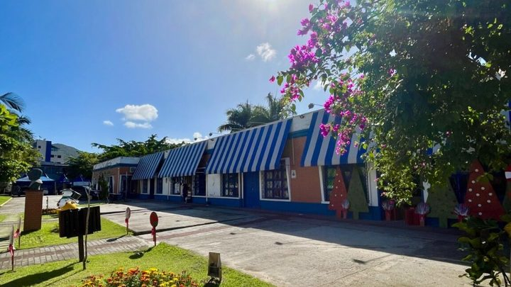

Itapema · CulturaItapema abre R$ 543 mil em editais de cultura, e a inscrição vai até 13 de setembro
Os três chamamentos que as lives vão explicar, com dinheiro federal da Aldir Blanc.
A Secretaria de Cultura faz uma live por edital, sempre às 19h, com leitura comentada do texto. Começa nesta segunda, 31, e vai até quarta, 2 de setembro. O encontro presencial é em 9 de setembro, no Espaço Cultural Nelson Santos, às 18h30, com inscrição prévia por formulário.
Em 30 segundos · Modo de Leitura, formato original Santa Informa
A Secretaria de Cultura de Itapema vai explicar, ao vivo, os editais que estão com inscrição aberta.
São três lives, uma para cada edital.
Todas começam às 19h.
Nesta segunda, 31, o assunto é o Edital nº 002/2026, de projetos culturais.
Na terça, 1º de setembro, é o Edital nº 003/2026, dos Pontos de Cultura Viva.
Na quarta, 2, é o Edital nº 004/2026, da Bolsa Mestres e Mestras da Cultura Popular.
Cada live faz a leitura comentada do texto, item por item.
Entra quem pode se inscrever, os critérios, os documentos e as etapas de seleção.
Em 9 de setembro tem tira-dúvidas presencial, às 18h30, no Espaço Cultural Nelson Santos.
Para o encontro presencial é preciso inscrição prévia, por formulário.
EconomiaPublicada em Redação Santa Informa
Quem faz cultura em Itapema e olhou para um edital sem entender direito o que pedia agora tem onde perguntar. A Secretaria de Cultura montou uma semana de orientação para os editais de incentivo que estão com inscrição aberta no município. A proposta é simples e velha de guerra: ler o edital em voz alta, parte por parte, e explicar o que cada exigência quer dizer.
São três transmissões, cada uma dedicada a um edital, todas a partir das 19h. A primeira é nesta segunda-feira, 31 de agosto, com o Edital nº 002/2026, de Seleção de Projetos Culturais, que atende projetos de vários segmentos. Na terça, 1º de setembro, vem o Edital nº 003/2026, voltado a Pontos de Cultura Viva já constituídos juridicamente. E na quarta, 2 de setembro, fecha com o Edital nº 004/2026, da Bolsa Mestres e Mestras da Cultura Popular, que reconhece saberes e trajetórias da cultura tradicional.
Segundo a Prefeitura, as lives fazem a leitura comentada do documento e apresentam o público apto a participar, os critérios de avaliação, a documentação necessária, as etapas de seleção e as demais orientações para a inscrição. É justamente onde a maioria dos projetos costuma tropeçar, porque a proposta boa se perde num anexo que faltou.
Para quem prefere conversar de perto, a Secretaria marcou um tira-dúvidas presencial no dia 9 de setembro, a partir das 18h30, no Espaço Cultural Nelson Santos, na Rua 112, nº 69, no Centro. Esse tem inscrição prévia, feita por um formulário divulgado no aviso da Prefeitura. Vale garantir o lugar antes, porque a data cai bem perto do fim do prazo.
Os três editais foram abertos em agosto e somam R$ 543 mil em dinheiro da Política Nacional Aldir Blanc, com inscrição prevista até 13 de setembro, como o Santa Informa mostrou quando os chamamentos saíram. É dinheiro público que fica na cidade e vira show, oficina, roda de samba, artesanato e memória. Quem nunca se inscreveu tende a achar que edital é coisa de gente grande e de escritório. Não é bem assim, e uma semana inteira de leitura comentada existe exatamente para derrubar essa impressão.
O resumo de 30 segundos está no topo e a versão completa é o texto acima. Aqui ficam as três leituras da casa sobre o mesmo assunto.
Clara, a otimista
Explicar edital em voz alta é das coisas mais democráticas que uma secretaria de cultura pode fazer. Quem faz cultura na periferia da cidade raramente teve aula de como preencher formulário público, e isso nunca foi falta de talento.
Três noites seguidas, uma para cada edital, e ainda um encontro presencial depois. Dá para assistir do sofá, anotar as dúvidas e levar a lista no dia 9.
Seu Prudêncio, o criterioso
Merece atenção o calendário. A última live é no dia 2 e o encontro presencial é no dia 9, com a inscrição dos editais prevista para encerrar em 13 de setembro. Sobram quatro dias entre a conversa presencial e o prazo final, o que é pouco para quem descobrir ali que falta um documento com prazo de emissão.
Vale acompanhar também onde as transmissões acontecem, porque o aviso não diz o canal. Uma sugestão útil: baixe o edital antes, leia com o texto na mão e chegue na live com a dúvida já formulada, em vez de esperar que ela apareça no meio da leitura.
E é justo reconhecer o acerto da Secretaria em um ponto importante. Fazer uma live por edital, em vez de juntar os três na mesma noite, respeita o tempo de quem só se interessa por um deles e aumenta a chance de a explicação chegar inteira.
Caco, o sarcástico
Leitura comentada de edital às sete da noite. A concorrência é a novela, e mesmo assim o enredo do edital costuma ter mais reviravolta.
Três noites de transmissão e um encontro presencial. Nunca se explicou tanto para quem, no fim, só quer saber onde assina.
O tira-dúvidas presencial pede inscrição prévia por formulário. Ou seja, para aprender a preencher formulário, comece preenchendo um formulário.
Fontes: Prefeitura de Itapema, aviso da Secretaria de Cultura publicado em 31 de agosto de 2026, de onde saem as três lives de leitura comentada, o horário das 19h, a distribuição por dia dos Editais nº 002/2026, nº 003/2026 e nº 004/2026, o conteúdo apresentado em cada transmissão e o tira-dúvidas presencial de 9 de setembro, às 18h30, no Espaço Cultural Nelson Santos, na Rua 112, nº 69, com inscrição prévia por formulário. Os valores dos editais e o prazo de 13 de setembro vêm da cobertura do Santa Informa de 21 de agosto de 2026, feita sobre os próprios chamamentos. A foto do topo é imagem ilustrativa de banco gratuito e não registra o fato noticiado.

Itapema · CulturaOs três chamamentos que as lives vão explicar, com dinheiro federal da Aldir Blanc.
Outra frente da agenda cultural da cidade, esta já realizada.
Outra porta de entrada para quem faz cultura em Itapema.